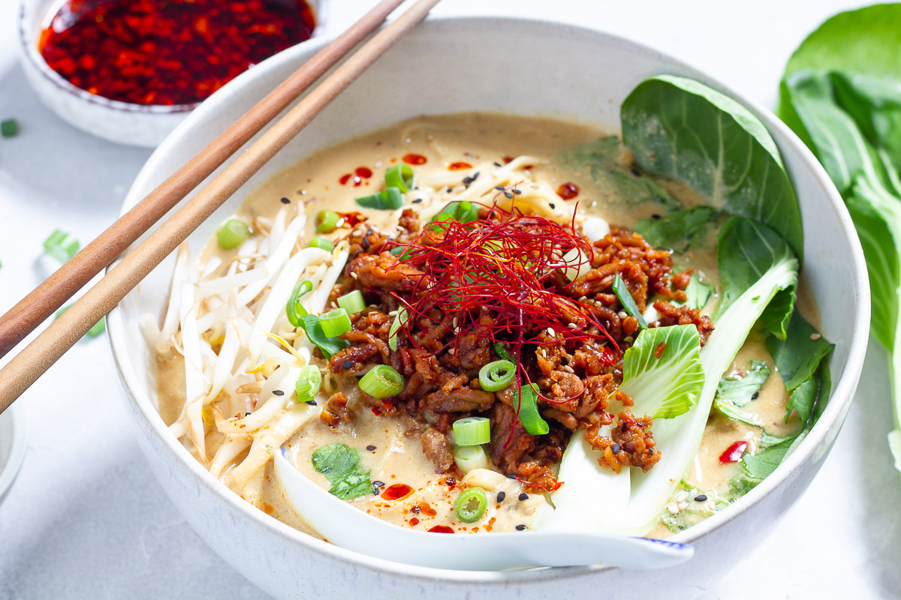

Ramen

Description
A bold and flavorful vegan spicy ramen loaded
with tender noodles, a rich and spicy broth,
fresh vegetables, and plant-based protein.
Topped with a medley of aromatics like green onions,
sesame seeds, and chili oil for an extra kick.
Perfect for warming up and satisfying your cravings
with a wholesome, plant-powered twist!
Ingredients
Recipe yields 3 servings
Sauce:
- 3 tablespoons reduced-sodium soy sauce
- 2 tablespoons sesame oil
- 1 ½ tablespoons brown sugar
- 1 tablespoon rice vinegar
- 2 teaspoons chili-garlic sauce, or more to taste
- 1 teaspoon grated fresh ginger
- 3 tablespoons creamy peanut butter
Noodles:
- 2 (3 ounce) packages ramen noodles
- 2 tablespoons chopped peanuts
- 2 medium green onions, thinly sliced diagonally
Steps
- Whisk soy sauce, sesame oil, brown sugar, rice vinegar,
chili garlic sauce, and ginger together in a small bowl.
Add peanut butter, whisking until well combined,
and set aside.
-
Bring 4 cups of water to a boil in a pot.
Discard the flavor packet and add ramen noodles
to the boiling water. Cook until noodles are tender,
4 to 5 minutes. Drain noodles, reserving some of
the noodle water in case you need to thin out the sauce later.
-
Pour sauce over ramen noodles, tossing until well coated.
If sauce is too thick, thin out with a small amount
of the reserved noodle water until you reach
your desired consistency. Your hot noodles will soak up
the sauce. Garnish with peanuts and green onion, and serve.